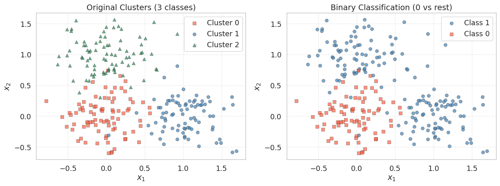
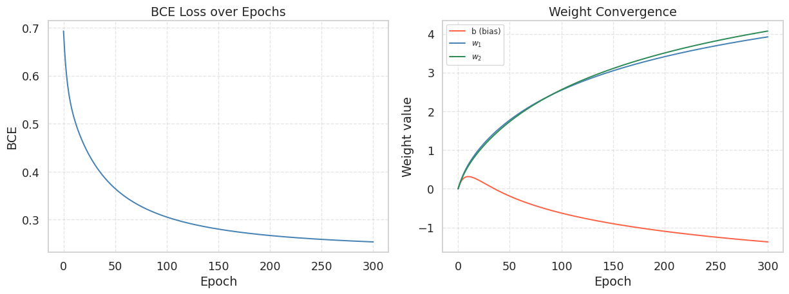
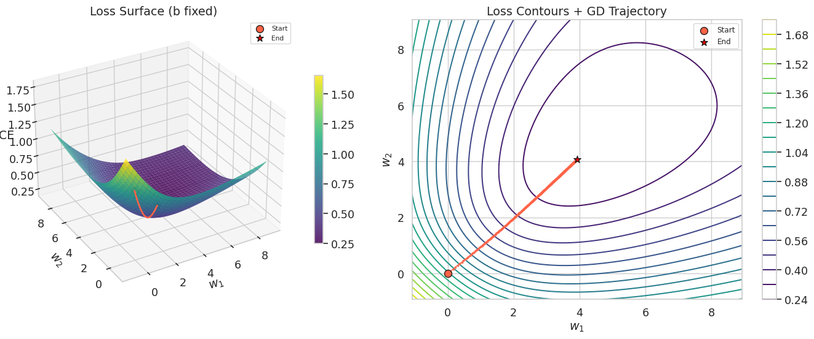
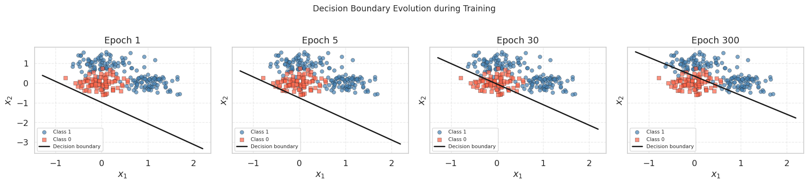
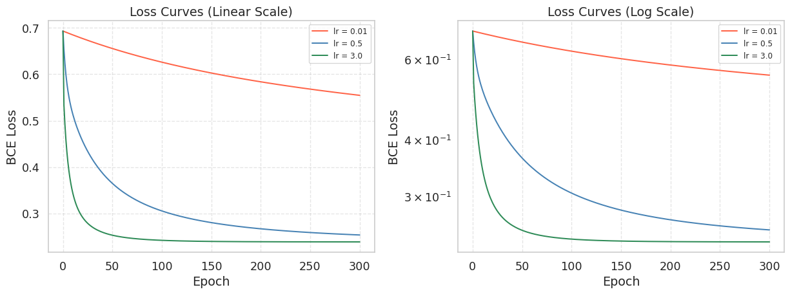
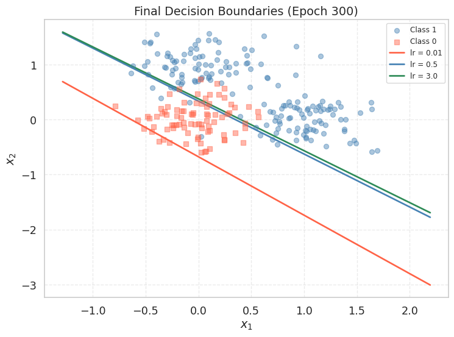

import numpy as np
import matplotlib.pyplot as plt
import matplotlib.animation as animation
from IPython.display import HTML
from sklearn.datasets import make_blobs
import seaborn as sns
sns.set_theme(style='whitegrid', font_scale=1.2)
np.random.seed(42)Lab2-2. Logistic Regression via Gradient Descent

Objectives
- Implement logistic regression using gradient descent and understand the geometry of the decision boundary.
- Investigate the impact of different learning rates on convergence speed and numerical stability.
- Animate how the decision boundary shifts during training to build visual intuition for the optimization process.
Background
Why No Closed-Form Solution?
Unlike linear regression, which has a closed-form solution (the Normal Equation), logistic regression has no closed-form solution. The BCE loss is nonlinear due to the sigmoid, so setting the gradient to zero does not yield an expression you can solve algebraically. Gradient descent — or a variant like Newton’s method — is the only way to find the optimal weights. This is also why gradient descent is so important to master: most models in machine learning, from logistic regression to deep neural networks, can only be trained iteratively.
The Gradient Descent Update Rule
Given a differentiable loss function \(\mathcal{L}(\mathbf{w})\), the gradient \(\nabla_\mathbf{w} \mathcal{L}\) points in the direction of steepest increase. Moving in the opposite direction reduces the loss:
\[\mathbf{w}^{(t+1)} = \mathbf{w}^{(t)} - \eta \, \nabla_\mathbf{w} \mathcal{L}\!\left(\mathbf{w}^{(t)}\right)\]
where \(\eta > 0\) is called the learning rate (also written lr in code). This single equation is the core of nearly all modern machine learning optimization.
BCE Loss and Its Gradient
Throughout this lab we use a model with two features:
\[p_i = \sigma(w_1 x_{i1} + w_2 x_{i2} + b)\]
Collecting parameters into \(\mathbf{w} = [b,\, w_1,\, w_2]^\top\) and prepending a column of ones to the data gives \(p_i = \sigma(\mathbf{w}^\top \mathbf{x}_i)\). For binary classification with labels \(y_i \in \{0, 1\}\), the sigmoid function maps the linear combination to a probability:
\[\sigma(z) = \frac{1}{1 + e^{-z}}\]
The Binary Cross-Entropy (BCE) loss over \(n\) samples is:
\[\mathcal{L}_{\text{BCE}}(\mathbf{w}) = -\frac{1}{n} \sum_{i=1}^{n} \left[ y_i \log p_i + (1 - y_i) \log(1 - p_i) \right]\]
Let \(e_i = p_i - y_i\) denote the prediction error of sample \(i\). The partial derivatives are:
\[\frac{\partial \mathcal{L}}{\partial b} = \frac{1}{n} \sum_{i=1}^{n} e_i, \qquad \frac{\partial \mathcal{L}}{\partial w_1} = \frac{1}{n} \sum_{i=1}^{n} e_i \, x_{i1}, \qquad \frac{\partial \mathcal{L}}{\partial w_2} = \frac{1}{n} \sum_{i=1}^{n} e_i \, x_{i2}\]
Each partial derivative has the same pattern as in MSE: the mean prediction error, weighted by the corresponding input feature (with the bias term using \(1\)). Stacking the three partial derivatives into a gradient vector gives:
\[\nabla_\mathbf{w} \mathcal{L} = \begin{bmatrix} \frac{\partial \mathcal{L}}{\partial b} \\[4pt] \frac{\partial \mathcal{L}}{\partial w_1} \\[4pt] \frac{\partial \mathcal{L}}{\partial w_2} \end{bmatrix} = \frac{1}{n} \begin{bmatrix} \sum_{i=1}^{n} e_i \cdot 1 \\[4pt] \sum_{i=1}^{n} e_i \, x_{i1} \\[4pt] \sum_{i=1}^{n} e_i \, x_{i2} \end{bmatrix}\]
Since the design matrix \(\mathbf{X}\) has rows \([1,\, x_{i1},\, x_{i2}]\), the column \(j\) of \(\mathbf{X}^\top\) contains the \(j\)-th feature values across all samples, so \(\mathbf{X}^\top (\mathbf{p} - \mathbf{y}) = \bigl[\sum e_i \cdot 1,\; \sum e_i x_{i1},\; \sum e_i x_{i2}\bigr]^\top\). In matrix form this is:
\[\nabla_\mathbf{w} \mathcal{L}_{\text{BCE}} = \frac{1}{n} \mathbf{X}^\top (\mathbf{p} - \mathbf{y})\]
where \(\mathbf{p} = \sigma(\mathbf{X}\mathbf{w})\) is the vector of predicted probabilities. This structural similarity with the MSE gradient is not a coincidence; it arises from the choice of the sigmoid with cross-entropy, which together form a canonical exponential family model.
Decision Boundary
The decision boundary is the set of all points \(\mathbf{x}\) for which \(p = 0.5\), i.e., where the model is maximally uncertain. Since \(\sigma(z) = 0.5\) exactly when \(z = 0\), the boundary is defined by:
\[b + w_1 x_1 + w_2 x_2 = 0\]
In 2D with features \(x_1, x_2\), this resolves to a straight line:
\[x_2 = -\frac{w_1 x_1 + b}{w_2}\]
As gradient descent updates \(\mathbf{w}\), this line rotates and translates until it correctly separates the two classes.
0. Setup
1. Logistic Regression via Gradient Descent
1.1 Generating Synthetic Data
We create a 2-feature classification dataset using make_blobs with three cluster centers. The original labels (0, 1, 2) are converted to a binary problem: cluster 0 becomes class 0, and clusters 1 and 2 become class 1. This gives a dataset where the positive class forms two groups on the upper-right side of the feature space, while the negative class sits near the origin.
np.random.seed(42)
X_cls, y_raw = make_blobs(
n_samples=250,
centers=[(0, 0), (1.0, 0.0), (0.0, 1.0)],
cluster_std=[0.3, 0.3, 0.3],
random_state=42
)
# Convert to binary: cluster 0 → class 0, clusters 1 & 2 → class 1
y_cls = (y_raw > 0).astype(int)
# Build the design matrix: prepend a column of ones for the bias term
# X_cls_aug has shape (250, 3): each row is [1, x1_i, x2_i]
n = len(y_cls)
X_cls_aug = np.column_stack([np.ones(n), X_cls])
print(f"X_cls_aug shape: {X_cls_aug.shape}") # (250, 3)
print(f"y_cls shape : {y_cls.shape}") # (250,)
print(f"Class 0: {np.sum(y_cls == 0)}, Class 1: {np.sum(y_cls == 1)}")X_cls_aug shape: (250, 3)
y_cls shape : (250,)
Class 0: 84, Class 1: 166The leading column of ones allows us to absorb the bias \(b\) into the weight vector \(\mathbf{w} = [b, w_1, w_2]^\top\), so the model becomes \(\mathbf{p} = \sigma(\mathbf{X}\mathbf{w})\) with no separate bias term in the code.
fig, axes = plt.subplots(1, 2, figsize=(13, 5))
# --- Left: original 3-cluster labels ---
for k, (marker, color, label) in enumerate(
[('s', 'tomato', 'Cluster 0'), ('o', 'steelblue', 'Cluster 1'), ('^', 'seagreen', 'Cluster 2')]
):
mask = y_raw == k
axes[0].scatter(X_cls[mask, 0], X_cls[mask, 1], marker=marker, color=color,
edgecolors='k', linewidths=0.4, label=label, alpha=0.7)
axes[0].set_title("Original Clusters (3 classes)")
axes[0].set_xlabel("$x_1$")
axes[0].set_ylabel("$x_2$")
axes[0].legend()
axes[0].grid(True, linestyle='--', alpha=0.4)
# --- Right: binary labels ---
axes[1].scatter(X_cls[y_cls == 1, 0], X_cls[y_cls == 1, 1],
marker='o', color='steelblue', edgecolors='k',
linewidths=0.4, label='Class 1', alpha=0.7)
axes[1].scatter(X_cls[y_cls == 0, 0], X_cls[y_cls == 0, 1],
marker='s', color='tomato', edgecolors='k',
linewidths=0.4, label='Class 0', alpha=0.7)
axes[1].set_title("Binary Classification (0 vs rest)")
axes[1].set_xlabel("$x_1$")
axes[1].set_ylabel("$x_2$")
axes[1].legend()
axes[1].grid(True, linestyle='--', alpha=0.4)
plt.tight_layout()
plt.show()
The left panel shows the three original clusters; the right panel shows the binary grouping we will use for logistic regression. The two positive-class clusters (upper and right) should be separable from the negative class (center) by a linear decision boundary — roughly along the line \(x_1 + x_2 = \text{const}\).
1.2 Implementing the Loss and Gradient
We implement the loss and gradient following the formulas from the Background section. Recall that for our model \(p_i = \sigma(b + w_1 x_{i1} + w_2 x_{i2})\), the prediction error of sample \(i\) is \(e_i = p_i - y_i\), and the three partial derivatives are:
\[\frac{\partial \mathcal{L}}{\partial b} = \frac{1}{n} \sum e_i, \qquad \frac{\partial \mathcal{L}}{\partial w_1} = \frac{1}{n} \sum e_i \, x_{i1}, \qquad \frac{\partial \mathcal{L}}{\partial w_2} = \frac{1}{n} \sum e_i \, x_{i2}\]
We first implement this element-wise to see each step clearly, then show the equivalent matrix form.
def sigmoid(z):
"""
Numerically stable sigmoid: clips z to avoid overflow in exp.
σ(z) = 1 / (1 + e^{-z})
"""
return 1.0 / (1.0 + np.exp(-np.clip(z, -500, 500)))
def bce_loss(X, y, w):
"""
Compute the Binary Cross-Entropy loss.
L = -(1/n) * sum[ y * log(p) + (1-y) * log(1-p) ]
"""
p = sigmoid(X @ w)
eps = 1e-12 # numerical guard against log(0)
return -float(np.mean(y * np.log(p + eps) + (1 - y) * np.log(1 - p + eps)))
def bce_gradient_elementwise(X, y, w):
"""
Compute each partial derivative separately.
X columns: [1, x1, x2], w: [b, w1, w2]
"""
n = len(y)
p = sigmoid(X @ w) # predicted probabilities, shape (n,)
e = p - y # prediction errors, shape (n,)
dL_db = (1.0 / n) * np.sum(e) # Σ e_i * 1
dL_dw1 = (1.0 / n) * np.sum(e * X[:, 1]) # Σ e_i * x_i1
dL_dw2 = (1.0 / n) * np.sum(e * X[:, 2]) # Σ e_i * x_i2
return np.array([dL_db, dL_dw1, dL_dw2])
def bce_gradient(X, y, w):
"""
Same result in one line using matrix multiplication.
(1/n) * X^T @ (p - y) computes all three partial derivatives at once.
"""
n = len(y)
p = sigmoid(X @ w) # predicted probabilities, shape (n,)
return (1.0 / n) * (X.T @ (p - y))Let us verify that both implementations produce the same gradient:
w_init = np.zeros(3) # [b=0, w1=0, w2=0]
grad_elem = bce_gradient_elementwise(X_cls_aug, y_cls, w_init)
grad_matrix = bce_gradient(X_cls_aug, y_cls, w_init)
print(f"Initial BCE : {bce_loss(X_cls_aug, y_cls, w_init):.4f}")
print(f"Gradient (element): dL/db={grad_elem[0]:.4f}, dL/dw1={grad_elem[1]:.4f}, dL/dw2={grad_elem[2]:.4f}")
print(f"Gradient (matrix) : dL/db={grad_matrix[0]:.4f}, dL/dw1={grad_matrix[1]:.4f}, dL/dw2={grad_matrix[2]:.4f}")
print(f"Match : {np.allclose(grad_elem, grad_matrix)}")Initial BCE : 0.6931
Gradient (element): dL/db=-0.1640, dL/dw1=-0.1765, dL/dw2=-0.1654
Gradient (matrix) : dL/db=-0.1640, dL/dw1=-0.1765, dL/dw2=-0.1654
Match : TrueAt the initial weights \(\mathbf{w} = \mathbf{0}\), the sigmoid outputs \(p = 0.5\) for every sample, so the model is maximally uncertain. The gradient for \(w_1\) and \(w_2\) should be negative (pointing toward decreasing the loss), pushing the weights in the direction that separates the two classes. The matrix form X.T @ (p - y) computes all three partial derivatives in a single operation, which is both faster and more concise.
1.3 Writing the Training Loop
The training loop applies the update rule at every epoch and records both the weights and the loss so we can inspect the full trajectory afterward.
def train_logistic(X, y, lr=0.5, epochs=500):
"""
Full-batch gradient descent for logistic regression.
Parameters
----------
lr : float -- learning rate (step size)
epochs : int -- number of full passes over the data
Returns
-------
w_history : ndarray of shape (epochs+1, d)
weights at every epoch, including the initial values
loss_history: list of float, length epochs+1
"""
w = np.zeros(X.shape[1])
w_history = [w.copy()]
loss_history = [bce_loss(X, y, w)]
for _ in range(epochs):
grad = bce_gradient(X, y, w)
w = w - lr * grad # gradient descent update
w_history.append(w.copy())
loss_history.append(bce_loss(X, y, w))
return np.array(w_history), loss_history
TipWhy
w.copy()?
NumPy arrays are mutable objects. Writing w_history.append(w) would append a reference to w, so every element in the list would point to the same array and reflect the final value of w. Calling .copy() creates a snapshot of the current values before the next update overwrites them.
1.4 Running the Optimizer
w_cls_hist, loss_cls_hist = train_logistic(X_cls_aug, y_cls, lr=0.5, epochs=300)
w_final = w_cls_hist[-1]
pred_labels = (sigmoid(X_cls_aug @ w_final) >= 0.5).astype(int)
accuracy = float(np.mean(pred_labels == y_cls))
print(f"Initial loss : {loss_cls_hist[0]:.4f}")
print(f"Final loss : {loss_cls_hist[-1]:.4f}")
print(f"Accuracy : {accuracy * 100:.1f}%")
print(f"Learned b : {w_final[0]:.4f}")
print(f"Learned w_1 : {w_final[1]:.4f}")
print(f"Learned w_2 : {w_final[2]:.4f}")Initial loss : 0.6931
Final loss : 0.2536
Accuracy : 89.2%
Learned b : -1.3700
Learned w_1 : 3.9207
Learned w_2 : 4.0708Expected output:
Initial loss : ~0.6931
Final loss : ~0.1XXX
Accuracy : ~95%+
Learned b : <0
Learned w_1 : >0
Learned w_2 : >0The weights \(w_1\) and \(w_2\) should both be positive: Class 1 lives in the upper-right region (both coordinates tend to be large and positive), so a positive weight on each feature increases \(\mathbf{w}^\top \mathbf{x}\) and pushes \(p\) toward 1. The bias \(b\) should be negative, shifting the decision boundary so that the origin (where Class 0 is centered) falls on the negative side.
1.5 Visualizing the Loss Curve and Weight Convergence
fig, axes = plt.subplots(1, 2, figsize=(13, 5))
# --- Left panel: loss curve ---
axes[0].plot(loss_cls_hist, color='steelblue', lw=1.5)
axes[0].set_title("BCE Loss over Epochs")
axes[0].set_xlabel("Epoch")
axes[0].set_ylabel("BCE")
axes[0].grid(True, linestyle='--', alpha=0.5)
# --- Right panel: weight convergence ---
labels = ['b (bias)', '$w_1$', '$w_2$']
colors = ['tomato', 'steelblue', 'seagreen']
for j, (label, col) in enumerate(zip(labels, colors)):
axes[1].plot(w_cls_hist[:, j], color=col, lw=1.5, label=label)
axes[1].set_title("Weight Convergence")
axes[1].set_xlabel("Epoch")
axes[1].set_ylabel("Weight value")
axes[1].legend(fontsize=9)
axes[1].grid(True, linestyle='--', alpha=0.5)
plt.tight_layout()
plt.show()
1.6 Loss Surface and Gradient Descent Trajectory
To visualize what gradient descent is doing geometrically, we plot the loss as a function of \(w_1\) and \(w_2\) while fixing the bias \(b\) at its optimal value. Unlike the MSE loss surface (which is a perfect paraboloid), the BCE loss surface is convex but not quadratic — notice the slightly different curvature compared to the linear regression case.
# Fix b at the trained value, sweep w1 and w2
b_fixed = w_final[0]
w1_vals = np.linspace(w_final[1] - 5, w_final[1] + 5, 120)
w2_vals = np.linspace(w_final[2] - 5, w_final[2] + 5, 120)
W1, W2 = np.meshgrid(w1_vals, w2_vals)
Loss_grid = np.zeros_like(W1)
for i in range(W1.shape[0]):
for j in range(W1.shape[1]):
w_test = np.array([b_fixed, W1[i, j], W2[i, j]])
Loss_grid[i, j] = bce_loss(X_cls_aug, y_cls, w_test)
fig = plt.figure(figsize=(15, 6))
# --- Left: 3D loss surface ---
ax3d = fig.add_subplot(121, projection='3d')
surf = ax3d.plot_surface(W1, W2, Loss_grid, cmap='viridis', alpha=0.85, linewidth=0)
# GD trajectory on the surface
traj_losses = [bce_loss(X_cls_aug, y_cls, np.array([b_fixed, w_cls_hist[i, 1], w_cls_hist[i, 2]]))
for i in range(len(w_cls_hist))]
ax3d.plot(w_cls_hist[:, 1], w_cls_hist[:, 2], traj_losses,
color='tomato', lw=2, zorder=10)
ax3d.scatter(w_cls_hist[0, 1], w_cls_hist[0, 2], traj_losses[0],
color='tomato', s=80, edgecolors='k', zorder=11, label='Start')
ax3d.scatter(w_cls_hist[-1, 1], w_cls_hist[-1, 2], traj_losses[-1],
color='red', s=80, edgecolors='k', marker='*', zorder=11, label='End')
ax3d.set_xlabel("$w_1$")
ax3d.set_ylabel("$w_2$")
ax3d.set_zlabel("BCE")
ax3d.set_title("Loss Surface (b fixed)")
ax3d.view_init(elev=30, azim=-120)
ax3d.legend(fontsize=8)
fig.colorbar(surf, ax=ax3d, shrink=0.6)
# --- Right: 2D contour + trajectory ---
ax2d = fig.add_subplot(122)
cont = ax2d.contour(W1, W2, Loss_grid, levels=20, cmap='viridis')
# GD trajectory
ax2d.plot(w_cls_hist[:, 1], w_cls_hist[:, 2], 'o-', color='tomato',
markersize=2, lw=1.2, alpha=0.8)
ax2d.scatter(w_cls_hist[0, 1], w_cls_hist[0, 2],
color='tomato', s=80, edgecolors='k', zorder=5, label='Start')
ax2d.scatter(w_cls_hist[-1, 1], w_cls_hist[-1, 2],
color='red', s=80, edgecolors='k', marker='*', zorder=5, label='End')
ax2d.set_xlabel("$w_1$")
ax2d.set_ylabel("$w_2$")
ax2d.set_title("Loss Contours + GD Trajectory")
ax2d.legend(fontsize=9)
fig.colorbar(cont, ax=ax2d)
plt.tight_layout()
plt.show()
The contour plot on the right shows the gradient descent trajectory as a path from the origin toward the minimum. Each step moves perpendicular to the contour lines (in the direction of steepest descent). The elliptical shape of the contours reflects the different scales and correlations between \(w_1\) and \(w_2\).
Note that this is a 2D slice of the full 3-dimensional parameter space (\(b\), \(w_1\), \(w_2\)). We fix \(b\) at its trained value to make the surface plottable, but during actual training \(b\) was also changing simultaneously. The trajectory shown is therefore an approximation — the true path lives in 3D and is projected onto this slice.
1.7 Visualizing the Decision Boundary at Different Epochs
def draw_decision_boundary(X_aug, y, w, ax, title="", line_color='k'):
"""
Scatter-plot the data and draw the linear decision boundary.
X_aug columns: [bias_col, x1, x2]; w = [w_bias, w1, w2].
"""
ax.scatter(X_aug[y == 1, 1], X_aug[y == 1, 2],
marker='o', color='steelblue', edgecolors='k',
linewidths=0.4, alpha=0.7, label='Class 1')
ax.scatter(X_aug[y == 0, 1], X_aug[y == 0, 2],
marker='s', color='tomato', edgecolors='k',
linewidths=0.4, alpha=0.7, label='Class 0')
x1_min = X_aug[:, 1].min() - 0.5
x1_max = X_aug[:, 1].max() + 0.5
x1_grid = np.linspace(x1_min, x1_max, 300)
if np.abs(w[2]) > 1e-8:
# Decision boundary: w[0] + w[1]*x1 + w[2]*x2 = 0
# => x2 = -(w[1]*x1 + w[0]) / w[2]
x2_bd = -(w[1] * x1_grid + w[0]) / w[2]
ax.plot(x1_grid, x2_bd, color=line_color, lw=2, label='Decision boundary')
ax.set_xlabel("$x_1$")
ax.set_ylabel("$x_2$")
ax.set_title(title)
ax.legend(fontsize=8)
ax.grid(True, linestyle='--', alpha=0.4)fig, axes = plt.subplots(1, 4, figsize=(18, 4), sharex=True, sharey=True)
snapshot_epochs = [1, 5, 30, 300]
for ax, ep in zip(axes, snapshot_epochs):
draw_decision_boundary(X_cls_aug, y_cls, w_cls_hist[ep], ax,
title=f"Epoch {ep}")
plt.suptitle("Decision Boundary Evolution during Training", fontsize=13, y=1.02)
plt.tight_layout()
plt.show()
At epoch 1, the boundary is nearly horizontal (random-looking) because the weights have barely moved from zero. By epoch 30, it has already found the approximate orientation. By epoch 300, it has settled into its final position, separating the origin cluster from the two positive-class clusters.
1.8 Animating the Decision Boundary
Seeing the boundary move frame-by-frame is one of the best ways to build intuition for what gradient descent is actually optimizing. The animation below replays the first 300 epochs, sampling every 3rd epoch to keep the file size reasonable.
This cell uses matplotlib.animation.FuncAnimation and renders the result as an HTML5 video via to_jshtml(). It works in both JupyterLab and Google Colab. In a static Quarto HTML export the animation will not auto-play; only the first frame will be visible. Run the cell interactively to see the full animation.
fig_a, ax_a = plt.subplots(figsize=(6, 5))
x1_lo = X_cls[:, 0].min() - 0.5
x1_hi = X_cls[:, 0].max() + 0.5
x2_lo = X_cls[:, 1].min() - 0.5
x2_hi = X_cls[:, 1].max() + 0.5
x1_anim = np.linspace(x1_lo, x1_hi, 300)
def animate(frame):
ax_a.cla()
ep = frame * 3 # sample every 3rd epoch
w = w_cls_hist[ep]
loss_val = loss_cls_hist[ep]
ax_a.scatter(X_cls[y_cls == 1, 0], X_cls[y_cls == 1, 1],
marker='o', color='steelblue', edgecolors='k',
linewidths=0.4, alpha=0.7, label='Class 1')
ax_a.scatter(X_cls[y_cls == 0, 0], X_cls[y_cls == 0, 1],
marker='s', color='tomato', edgecolors='k',
linewidths=0.4, alpha=0.7, label='Class 0')
if np.abs(w[2]) > 1e-8:
x2_bd = -(w[1] * x1_anim + w[0]) / w[2]
ax_a.plot(x1_anim, x2_bd, 'k-', lw=2)
ax_a.set_xlim(x1_lo, x1_hi)
ax_a.set_ylim(x2_lo, x2_hi)
ax_a.set_title(f"Epoch {ep:3d} | BCE = {loss_val:.4f}")
ax_a.set_xlabel("$x_1$")
ax_a.set_ylabel("$x_2$")
ax_a.legend(loc='upper left', fontsize=9)
ax_a.grid(True, linestyle='--', alpha=0.4)
n_frames = len(w_cls_hist) // 3
anim = animation.FuncAnimation(fig_a, animate, frames=n_frames,
interval=80, repeat=False)
plt.close(fig_a)
HTML(anim.to_jshtml())2. Effect of Learning Rate on Convergence
The learning rate \(\eta\) controls how large each update step is. Choosing the right value is critical: too small and training takes forever; too large and the updates overshoot, causing oscillation or divergence. We now compare three representative values.
learning_rates = [0.01, 0.5, 3.0]
lr_colors = ['tomato', 'steelblue', 'seagreen']
lr_results = {}
for lr in learning_rates:
wh, lh = train_logistic(X_cls_aug, y_cls, lr=lr, epochs=300)
lr_results[lr] = {'w_hist': wh, 'loss_hist': lh}
fig, axes = plt.subplots(1, 2, figsize=(13, 5))
# --- Left: BCE loss curves (linear scale) ---
for lr, col in zip(learning_rates, lr_colors):
axes[0].plot(lr_results[lr]['loss_hist'], color=col,
label=f'lr = {lr}', lw=1.5)
# --- Right: BCE loss curves (log scale) ---
for lr, col in zip(learning_rates, lr_colors):
axes[1].semilogy(lr_results[lr]['loss_hist'], color=col,
label=f'lr = {lr}', lw=1.5)
for ax in axes:
ax.set_xlabel("Epoch")
ax.set_ylabel("BCE Loss")
ax.legend(fontsize=9)
ax.grid(True, linestyle='--', alpha=0.5)
axes[0].set_title("Loss Curves (Linear Scale)")
axes[1].set_title("Loss Curves (Log Scale)")
plt.tight_layout()
plt.show()
The log-scale plot on the right makes it easier to compare convergence speed across many orders of magnitude. A straight line on a log-scale plot indicates exponential decay, which is the ideal convergence behavior.
What you should observe:
lr = 0.01converges very slowly. After 300 epochs the loss is still far from its minimum.lr = 0.5hits the sweet spot. The loss drops steeply and levels off near the minimum.lr = 3.0may oscillate wildly or producenanvalues, signaling divergence.
We can also compare the final decision boundaries produced by each learning rate:
fig, ax = plt.subplots(figsize=(8, 6))
ax.scatter(X_cls[y_cls == 1, 0], X_cls[y_cls == 1, 1],
marker='o', color='steelblue', alpha=0.45, label='Class 1', zorder=3)
ax.scatter(X_cls[y_cls == 0, 0], X_cls[y_cls == 0, 1],
marker='s', color='tomato', alpha=0.45, label='Class 0', zorder=3)
x1_range = np.linspace(X_cls[:, 0].min() - 0.5, X_cls[:, 0].max() + 0.5, 300)
for lr, col in zip(learning_rates, lr_colors):
w = lr_results[lr]['w_hist'][-1]
if np.abs(w[2]) > 1e-8:
x2_bd = -(w[1] * x1_range + w[0]) / w[2]
ax.plot(x1_range, x2_bd, color=col, lw=2, label=f'lr = {lr}')
ax.set_title("Final Decision Boundaries (Epoch 300)")
ax.set_xlabel("$x_1$")
ax.set_ylabel("$x_2$")
ax.legend(fontsize=9)
ax.grid(True, linestyle='--', alpha=0.4)
plt.tight_layout()
plt.show()
WarningWhat Happens When the Learning Rate Is Too Large?
With lr = 3.0 you may observe the loss oscillating wildly or printing nan. When this happens, the weights grow without bound, sigmoid receives extreme inputs, and the log in the BCE loss becomes numerically undefined. You can test this by printing lr_results[3.0]['loss_hist'][:10] and observing how quickly the loss explodes.
When \(\eta\) is small enough, the opposite happens: as you approach the minimum the gradient shrinks toward zero, so the update size automatically becomes smaller even without changing \(\eta\). Gradient descent has a built-in braking mechanism — but only if the learning rate is small enough to let you get close in the first place.
If your model does not converge, the first thing to try is reducing the learning rate by a factor of 10.
Summary
- Gradient descent iteratively minimizes a loss by updating \(\mathbf{w} \leftarrow \mathbf{w} - \eta \nabla_\mathbf{w} \mathcal{L}\). Unlike linear regression, logistic regression has no closed-form solution, so gradient descent is the only option.
- For logistic regression, the BCE gradient is \(\frac{1}{n}\mathbf{X}^\top(\mathbf{p} - \mathbf{y})\). Each component of the gradient is the mean prediction error weighted by the corresponding feature. The elegant form comes from the natural pairing of sigmoid and cross-entropy.
- The learning rate is the most sensitive hyperparameter. A small \(\eta\) gives slow but stable convergence; a large \(\eta\) risks oscillation or divergence. Plotting the loss on a log scale is the clearest way to diagnose the behavior.
- The decision boundary of logistic regression is always a hyperplane. During training it rotates and translates continuously; animating this motion reveals what gradient descent is geometrically doing in the feature space.
References
- Bishop, C. M. (2006). Pattern Recognition and Machine Learning. Springer.
- Goodfellow, I., Bengio, Y., and Courville, A. (2016). Deep Learning. MIT Press.